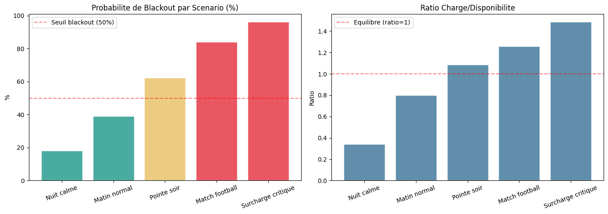

06 - Dashboard Professionnel - Guide & Demonstration#
CEET Smart Grid - Energy Blackout Prediction#
Objectif : Documenter et tester le dashboard Dash et l’API FastAPI.
import sys
sys.path.insert(0, '../src')
import pandas as pd
import numpy as np
import json
from utils import DATA_PROC
print("=== SERVICES DISPONIBLES ===")
print(" Dashboard Dash : http://localhost:8050")
print(" API FastAPI : http://localhost:8000")
print(" Docs Swagger : http://localhost:8000/docs")
print(" App Streamlit : http://localhost:8501")
=== SERVICES DISPONIBLES ===
Dashboard Dash : http://localhost:8050
API FastAPI : http://localhost:8000
Docs Swagger : http://localhost:8000/docs
App Streamlit : http://localhost:8501
6.1 Commandes de Lancement#
launch_info = {
"Dash Dashboard": "cd dashboard && python app.py",
"FastAPI API": "cd deployment/fastapi && uvicorn main:app --reload",
"Streamlit App": "cd deployment/streamlit && streamlit run app.py",
"Docker Build": "docker-compose -f deployment/docker/docker-compose.yml up --build",
}
for service, cmd in launch_info.items():
print(f" {service:20s}: {cmd}")
Dash Dashboard : cd dashboard && python app.py
FastAPI API : cd deployment/fastapi && uvicorn main:app --reload
Streamlit App : cd deployment/streamlit && streamlit run app.py
Docker Build : docker-compose -f deployment/docker/docker-compose.yml up --build
6.2 Simulation Locale de Prediction#
def predict_local(reading):
load_ratio = reading['total_load_mw'] / max(reading['available_power_mw'], 1)
power_margin = reading['available_power_mw'] - reading['total_load_mw']
volt_dev = abs(reading['voltage'] - 220)
freq_dev = abs(reading['frequency'] - 50)
grid_stress = (
0.40 * min(load_ratio, 2) / 2 +
0.30 * (reading['transformer_temp'] / 120) +
0.15 * (volt_dev / 40) +
0.15 * (freq_dev / 3)
)
event_factor = 1.15 if reading.get('event','') not in ['No Event',''] else 1.0
risk = min((
reading.get('outage_risk', 50)/100 * 0.35 +
min(load_ratio, 2)/2 * 0.30 +
grid_stress * 0.20 +
reading['transformer_temp']/120 * 0.15
) * event_factor, 1.0)
level = ("CRITIQUE" if risk >= 0.75 else
"ELEVE" if risk >= 0.50 else
"MODERE" if risk >= 0.25 else "FAIBLE")
return {
"prediction": int(risk >= 0.5),
"probability_pct": round(risk * 100, 2),
"risk_level": level,
"load_ratio": round(load_ratio, 3),
"power_margin_mw": round(power_margin, 1),
"grid_stress_pct": round(grid_stress * 100, 2),
}
# Test
test = {
"total_load_mw": 420, "available_power_mw": 360,
"temperature": 38, "transformer_temp": 92,
"voltage": 208, "frequency": 49.5,
"outage_risk": 85, "event": "Football Match"
}
result = predict_local(test)
print("=== PREDICTION ===")
for k, v in result.items():
print(f" {k:22s}: {v}")
=== PREDICTION ===
prediction : 1
probability_pct : 79.83
risk_level : CRITIQUE
load_ratio : 1.167
power_margin_mw : -60
grid_stress_pct : 53.33
6.3 Test Multi-Scenarios#
import matplotlib.pyplot as plt
scenarios = [
{"name": "Nuit calme", "total_load_mw": 120, "available_power_mw": 350,
"transformer_temp": 45, "voltage": 222, "frequency": 50.1, "outage_risk": 10, "event": "No Event"},
{"name": "Matin normal", "total_load_mw": 280, "available_power_mw": 350,
"transformer_temp": 65, "voltage": 219, "frequency": 49.9, "outage_risk": 35, "event": "No Event"},
{"name": "Pointe soir", "total_load_mw": 380, "available_power_mw": 350,
"transformer_temp": 88, "voltage": 212, "frequency": 49.5, "outage_risk": 72, "event": "No Event"},
{"name": "Match football", "total_load_mw": 440, "available_power_mw": 350,
"transformer_temp": 95, "voltage": 208, "frequency": 49.2, "outage_risk": 88, "event": "Football"},
{"name": "Surcharge critique","total_load_mw": 520, "available_power_mw": 350,
"transformer_temp": 110,"voltage": 198, "frequency": 48.8, "outage_risk": 95, "event": "Festival"},
]
results_list = []
for s in scenarios:
r = predict_local(s)
results_list.append({"Scenario": s['name'], **r})
df_sc = pd.DataFrame(results_list)
print(df_sc[['Scenario','probability_pct','risk_level','load_ratio']].to_string(index=False))
fig, axes = plt.subplots(1, 2, figsize=(14, 5))
colors = ['#2A9D8F' if p < 50 else '#E9C46A' if p < 75 else '#E63946'
for p in df_sc['probability_pct']]
axes[0].bar(df_sc['Scenario'], df_sc['probability_pct'], color=colors, edgecolor='white', alpha=0.85)
axes[0].axhline(50, color='red', linestyle='--', alpha=0.5, label='Seuil blackout (50%)')
axes[0].set_title('Probabilite de Blackout par Scenario (%)')
axes[0].set_ylabel('%')
axes[0].tick_params(axis='x', rotation=20)
axes[0].legend()
axes[1].bar(df_sc['Scenario'], df_sc['load_ratio'],
color='#457B9D', edgecolor='white', alpha=0.85)
axes[1].axhline(1.0, color='red', linestyle='--', alpha=0.5, label='Equilibre (ratio=1)')
axes[1].set_title('Ratio Charge/Disponibilite')
axes[1].set_ylabel('Ratio')
axes[1].tick_params(axis='x', rotation=20)
axes[1].legend()
plt.tight_layout()
plt.savefig('../reports/figures/dashboard_scenarios.png', dpi=120, bbox_inches='tight')
plt.show()
Scenario probability_pct risk_level load_ratio
Nuit calme 18.14 FAIBLE 0.343
Matin normal 39.00 MODERE 0.800
Pointe soir 62.33 ELEVE 1.086
Match football 83.96 CRITIQUE 1.257
Surcharge critique 96.12 CRITIQUE 1.486

6.4 KPIs Globaux du Projet#
df_full = pd.read_csv(DATA_PROC / 'ceet_processed.csv', parse_dates=['datetime'])
print("=" * 60)
print(" CEET SMART GRID - KPIs CLES DU PROJET")
print("=" * 60)
kpis = {
"Periode analysee": f"{df_full['datetime'].min().date()} a {df_full['datetime'].max().date()}",
"Total observations": f"{len(df_full):,}",
"Taux de blackout": f"{df_full['blackout'].mean()*100:.2f}%",
"Taux de surcharge": f"{df_full['overload'].mean()*100:.2f}%",
"Delesage total (MW)": f"{df_full['load_shedding_mw'].sum():,.0f}",
"Charge moyenne (MW)": f"{df_full['total_load_mw'].mean():.1f}",
"Charge maximale (MW)": f"{df_full['total_load_mw'].max():.1f}",
"Risque moyen (%)": f"{df_full['outage_risk'].mean():.1f}",
"Region la + risquee": df_full.groupby('region')['outage_risk'].mean().idxmax(),
"Heure la + a risque": f"{int(df_full.groupby('hour')['blackout'].mean().idxmax())}h",
"Saison la + a risque": df_full.groupby('season')['blackout'].mean().idxmax(),
"Features totales": str(df_full.shape[1]),
}
for k, v in kpis.items():
print(f" {k:35s}: {v}")
============================================================
CEET SMART GRID - KPIs CLES DU PROJET
============================================================
Periode analysee : 2020-01-01 a 2025-09-14
Total observations : 50,000
Taux de blackout : 3.95%
Taux de surcharge : 82.47%
Delesage total (MW) : 718,632
Charge moyenne (MW) : 310.3
Charge maximale (MW) : 551.4
Risque moyen (%) : 94.6
Region la + risquee : Lome
Heure la + a risque : 23h
Saison la + a risque : Pluvieuse
Features totales : 75